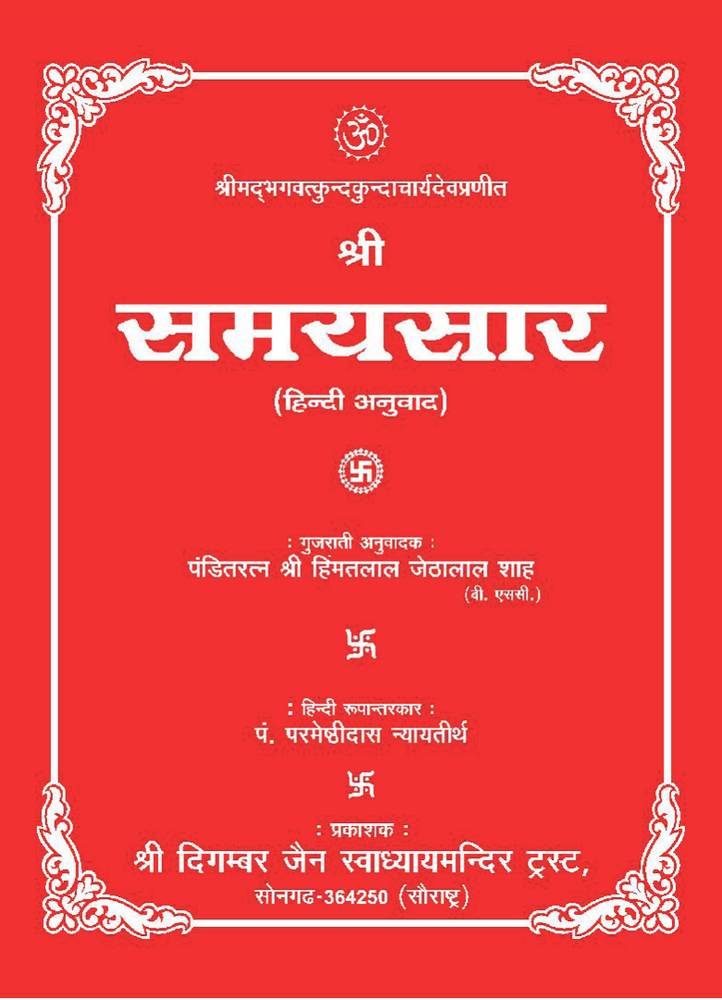

Shri Samaysar
- 85 published
- 1 on YouTube only
- 72 recorded, not published
Gatha 294 · 4 sittings · 1998
| Part | Date | Reference | Length | Recording |
|---|---|---|---|---|
| 1 | 30 August 1998 | Gatha 294 | 61 min | Video |
| 2 | 31 August 1998 | Gatha 294 | 58 min | Video |
| 3 | 1 September 1998 | Gatha 294 | 60 min | Video |
| 4 | 4 September 1998 | Gatha 294 | 57 min | Video |
Gatha 193 · 3 sittings · 1999
| Part | Date | Reference | Length | Recording |
|---|---|---|---|---|
| 1 | 24 January 1999 | Gatha 193 | 61 min | Video |
| 2 | 25 January 1999 | Gatha 193 | 44 min | Video |
| 3 | 26 January 1999 | Gatha 193, 194 | 56 min | Video |
Gatha 199 · 2 sittings · 1999
| Part | Date | Reference | Length | Recording |
|---|---|---|---|---|
| 9 | 10 February 1999 | Gatha 199, 10 | 58 min | Video |
| 10 | 11 February 1999 | Gatha 199, 11 | 61 min | Video |
Gatha 6 · 7 sittings · 1999
| Part | Date | Reference | Length | Recording |
|---|---|---|---|---|
| 1 | 4 March 1999 | Gatha 6 | 61 min | Video |
| 2 | 5 March 1999 | Gatha 6 | 56 min | Video |
| 3 | 6 March 1999 | Gatha 6 | 57 min | Video |
| 4 | 7 March 1999 | Gatha 6 | 61 min | Video |
| 5 | 8 March 1999 | Gatha 6 | 51 min | Video |
| 6 | 9 March 1999 | Gatha 6 | 54 min | Video |
| 7 | 10 March 1999 | Gatha 6 | 53 min | Video |
Gatha 6 · 2 sittings · 1999
| Part | Date | Reference | Length | Recording |
|---|---|---|---|---|
| 10 | 15 March 1999 | Gatha 6 | 48 min | Video |
| 11 | 16 March 1999 | Gatha 6 | 57 min | Video |
Sloka 164 · 2 sittings · 2000
| Part | Date | Reference | Length | Recording |
|---|---|---|---|---|
| 27 December 2000 | Samaysar Sloka 164 | Recorded, not published | ||
| 28 December 2000 | Samaysar Sloka 164 | Recorded, not published |
Gatha 294 · 5 sittings · 2000–2001
| Part | Date | Reference | Length | Recording |
|---|---|---|---|---|
| 29 December 2000 | Samaysar Gatha 294 | Recorded, not published | ||
| 30 December 2000 | Samaysar Gatha 294 | Recorded, not published | ||
| 1 | 31 December 2000 | Samaysar Gatha 294 | Recorded, not published | |
| 1 January 2001 | Samaysar Gatha 294 | Recorded, not published | ||
| 2 January 2001 | Samaysar Gatha 294 | Recorded, not published |
Gatha 15 · 3 sittings · 2001
| Part | Date | Reference | Length | Recording |
|---|---|---|---|---|
| 5 March 2001 · 1 of 3 | Samaysar Gatha 15 | Recorded, not published | ||
| 2 | 5 March 2001 · 2 of 3 | Samaysar Gatha 15 | Recorded, not published | |
| 3 | 5 March 2001 · 3 of 3 | Samaysar Gatha 15 | Recorded, not published |
Gatha 17 · 2 sittings · 2001
| Part | Date | Reference | Length | Recording |
|---|---|---|---|---|
| 2 | 8 March 2001 · 2 of 3 | Samaysar Gatha 17,18 | Recorded, not published | |
| 3 | 8 March 2001 · 3 of 3 | Samaysar Gatha 17,18 | Recorded, not published |
Gatha 201 · 3 sittings · 2001
| Part | Date | Reference | Length | Recording |
|---|---|---|---|---|
| 9 March 2001 · 2 of 2 | Samaysar Gatha 201,202 | Recorded, not published | ||
| 10 March 2001 · 1 of 2 | Samaysar Gatha 201,202 | Recorded, not published | ||
| 10 March 2001 · 2 of 2 | Samaysar Gatha 201,202 | Recorded, not published |
Gatha 320 · 7 sittings · 2001
| Part | Date | Reference | Length | Recording |
|---|---|---|---|---|
| 1 | 6 July 2001 | Samaysar Gatha 320 | Recorded, not published | |
| 2 | 7 July 2001 | Samaysar Gatha 320 | Recorded, not published | |
| 8 July 2001 | Samaysar Gatha 320 | Recorded, not published | ||
| 9 July 2001 | Samaysar Gatha 320 | Recorded, not published | ||
| 10 July 2001 | Samaysar Gatha 320 | Recorded, not published | ||
| 11 July 2001 | Samaysar Gatha 320 | Recorded, not published | ||
| 12 July 2001 | Samaysar Gatha 320 | Recorded, not published |
Gatha 328 · 6 sittings · 2001
| Part | Date | Reference | Length | Recording |
|---|---|---|---|---|
| 16 July 2001 · 1 of 2 | Samaysar Gatha328\31,s201 | Recorded, not published | ||
| 16 July 2001 · 2 of 2 | Samaysar Gatha328\31,s202 | Recorded, not published | ||
| 1 | 17 July 2001 | Samaysar Gatha 328-331 | Recorded, not published | |
| 2 | 18 July 2001 | Samaysar Gatha 328-331 | Recorded, not published | |
| 3 | 19 July 2001 | Samaysar Gatha 328,331 | Recorded, not published | |
| 20 July 2001 | Samaysar Gatha 328,331 | Recorded, not published |
Gatha 72 · 7 sittings · 2001
| Part | Date | Reference | Length | Recording |
|---|---|---|---|---|
| 25 July 2001 · 2 of 2 | Samaysar Gatha 72 | Recorded, not published | ||
| 26 July 2001 · 1 of 2 | Samaysar Gatha 72 | Recorded, not published | ||
| 8 | 26 July 2001 · 2 of 2 | Samaysar Gatha 72 | Recorded, not published | |
| 27 July 2001 · 1 of 2 | Samaysar Gatha 72 | Recorded, not published | ||
| 10 | 27 July 2001 · 2 of 2 | Samaysar Gatha 72 | Recorded, not published | |
| 11 | 28 July 2001 · 1 of 3 | Samaysar Gatha 72 | Recorded, not published | |
| 12 | 28 July 2001 · 2 of 3 | Samaysar Gatha 72,73 | Recorded, not published |
Gatha 73 · 2 sittings · 2001
| Part | Date | Reference | Length | Recording |
|---|---|---|---|---|
| 3 | 28 July 2001 · 3 of 3 | Samaysar Gatha 73 | Recorded, not published | |
| 9 August 2001 | Samaysar Gatha 73 | Recorded, not published |
Gatha 206 · 12 sittings · 2001
| Part | Date | Reference | Length | Recording |
|---|---|---|---|---|
| 1 | 11 August 2001 | Samaysar Gatha 206 | Recorded, not published | |
| 2 | 12 August 2001 | Samaysar Gatha 206 | Recorded, not published | |
| 3 | 13 August 2001 | Samaysar Gatha 206 | Recorded, not published | |
| 4 | 14 August 2001 | Samaysar Gatha 206 | Recorded, not published | |
| 15 August 2001 | Samaysar Gatha 206 | Recorded, not published | ||
| 16 August 2001 | Samaysar Gatha 206 | Recorded, not published | ||
| 17 August 2001 | Samaysar Gatha 206 | Recorded, not published | ||
| 8 | 18 August 2001 | Samaysar Gatha 206 | Recorded, not published | |
| 9 | 19 August 2001 | Samaysar Gatha 206 | Recorded, not published | |
| 10 | 20 August 2001 | Samaysar Gatha 206 (s)144 | Recorded, not published | |
| 11 | 21 August 2001 | Samaysar Gatha 206 (s)144 | Recorded, not published | |
| 12 | 22 August 2001 | Samaysar Gatha 206 (s)144 | Recorded, not published |
Gatha 138 · 4 sittings · 2001
| Part | Date | Reference | Length | Recording |
|---|---|---|---|---|
| 1 | 20 September 2001 | Samaysar Sloak 138 | Recorded, not published | |
| 2 | 21 September 2001 | Samaysar Sloak 138 | Recorded, not published | |
| 3 | 22 September 2001 | Samaysar Sloak 138 | Recorded, not published | |
| 23 September 2001 | Samaysar Sloak 138 | Recorded, not published |
Gatha 153 · 3 sittings · 2001
| Part | Date | Reference | Length | Recording |
|---|---|---|---|---|
| 2 | 26 October 2001 | Samaysar Gatha 153 | Recorded, not published | |
| 27 October 2001 | Samaysar Gatha 153 | Recorded, not published | ||
| 28 October 2001 | Samaysar Gatha 153 | Recorded, not published |
Sloka 1 · 2 sittings · 2002
| Part | Date | Reference | Length | Recording |
|---|---|---|---|---|
| 17 May 2002 | Atma Khyati Shloka 1 | 36 min | Video | |
| 2 | 18 May 2002 | Atma Khyati Shloka 1 | 53 min | Video |
Sloka 2 · 2 sittings · 2002
| Part | Date | Reference | Length | Recording |
|---|---|---|---|---|
| 4 | 19 May 2002 | Atma Khyati Shloka 2 | 60 min | Video |
| 20 May 2002 | Atma Khyati Shloka 2 | 61 min | Video |
Gatha 1 · 4 sittings · 2002
| Part | Date | Reference | Length | Recording |
|---|---|---|---|---|
| 22 May 2002 | Gatha 1 | Video | ||
| 8 | 23 May 2002 | Gatha 1 | Video | |
| 24 May 2002 | Gatha 1 | Video | ||
| 10 | 25 May 2002 | Gatha 1 | Video |
Gatha 2 · 4 sittings · 2002
| Part | Date | Reference | Length | Recording |
|---|---|---|---|---|
| 11 | 26 May 2002 | Gatha 2 | Video | |
| 2 | 27 May 2002 | Gatha 2 | 42 min | Video |
| 28 May 2002 | Gatha 2 | Video | ||
| 29 May 2002 | Gatha 2; 3 | Video |
Gatha 3 · 2 sittings · 2002
| Part | Date | Reference | Length | Recording |
|---|---|---|---|---|
| 30 May 2002 | Gatha 3 | Video | ||
| 31 May 2002 | Gatha 3, 31 | 1 min | Video |
Gatha 5 · 4 sittings · 2002
| Part | Date | Reference | Length | Recording |
|---|---|---|---|---|
| 1 | 2 June 2002 | Gatha 5 | 64 min | Video |
| 3 June 2002 | Gatha 5 | Video | ||
| 20 | 4 June 2002 | Gatha 5 | Video | |
| 21 | 5 June 2002 | Gatha 5 | Video |
Gatha 6 · 13 sittings · 2002
| Part | Date | Reference | Length | Recording |
|---|---|---|---|---|
| 1 | 6 June 2002 | Gatha 6 | 50 min | Video |
| 2 | 7 June 2002 | Gatha 6 | 56 min | Video |
| 24 | 8 June 2002 | Gatha 6 | 58 min | Video |
| 25 | 9 June 2002 | Gatha 6 | 56 min | Video |
| 26 | 10 June 2002 | Gatha 6 | 31 min | Video |
| 11 June 2002 | Gatha 6 | 47 min | Video | |
| 28 | 12 June 2002 | Gatha 6 | Video | |
| 13 June 2002 | Gatha 6 | 57 min | Video | |
| 14 June 2002 | Gatha 6 | Video | ||
| 15 June 2002 | Gatha 6 | Video | ||
| 16 June 2002 | Gatha 6 | 60 min | Video | |
| 33 | 17 June 2002 | Gatha 6 | Video | |
| 34 | 18 June 2002 | Gatha 6 | Video |
Gatha 7 · 3 sittings · 2002
| Part | Date | Reference | Length | Recording |
|---|---|---|---|---|
| 35 | 3 July 2002 | Gatha 7 | Video | |
| 36 | 4 July 2002 | Gatha 7 | Video | |
| 37 | 5 July 2002 | Gatha 7 | Video |
Sloka 14 · 2 sittings · 2002
| Part | Date | Reference | Length | Recording |
|---|---|---|---|---|
| 13 July 2002 · 2 of 2 | Sloka 14 | Video | ||
| 14 July 2002 | Sloka 14 | Video |
Gatha 8 · 2 sittings · 2002
| Part | Date | Reference | Length | Recording |
|---|---|---|---|---|
| 26 July 2002 | Gatha 8 | 59 min | Video | |
| 27 July 2002 | Gatha 8 | 43 min | Video |
Gatha 203 · 3 sittings · 2002
| Part | Date | Reference | Length | Recording |
|---|---|---|---|---|
| 10 August 2002 | Gatha 203 | 52 min | Video | |
| 11 August 2002 | Gatha 203 | 56 min | Video | |
| 3 | 12 August 2002 | Gatha 203 | 56 min | Video |
Gatha 9 · 3 sittings · 2002
| Part | Date | Reference | Length | Recording |
|---|---|---|---|---|
| 18 August 2002 | Gatha 9; 10 | Video | ||
| 19 August 2002 | Gatha 9; 10 | Video | ||
| 20 August 2002 | Gatha 9; 10 | Video |
Gatha 11 · 6 sittings · 2002
| Part | Date | Reference | Length | Recording |
|---|---|---|---|---|
| 21 August 2002 | Gatha 11 | Video | ||
| 2 | 5 September 2002 | Gatha 11 | 55 min | Video |
| 6 September 2002 | Gatha 11 | Video | ||
| 7 September 2002 | Gatha 11 | Video | ||
| 9 September 2002 | Gatha 11 | Video | ||
| 10 September 2002 | Gatha 11 | Video |
Gatha 4 · 3 sittings · 2002
| Part | Date | Reference | Length | Recording |
|---|---|---|---|---|
| 1 | 23 September 2002 | Gatha 4 | 60 min | Video |
| 25 September 2002 | Gatha 4 | Video | ||
| 3 | 26 September 2002 | Gatha 4 | 51 min | Video |
Other sittings · 31 sittings
| Part | Date | Reference | Length | Recording |
|---|---|---|---|---|
| 22 August 1998 | Gatha 45, 46, 22 | 60 min | Video | |
| 1 | 29 August 1998 | Samaysar Sloka 164 ' | 49 min | Video |
| 6 December 1998 | Samaysar Sloka 110 | Recorded, not published | ||
| 4 | 27 January 1999 | Samaysar nirjara Adhikar 194 | Recorded, not published | |
| 5 | 31 January 1999 | Gatha 195 | 61 min | Video |
| 7 | 1 February 1999 | Gatha 196, 1 | 54 min | Video |
| 8 February 1999 | Gatha 197, 8 | 53 min | Video | |
| 3 | 9 February 1999 | Gatha 198, 9 | 62 min | Video |
| 14 March 1999 | Gatha 200, 14 | 55 min | Video | |
| 2 | 11 April 1999 | Samaysar Gatha 200 | Recorded, not published | |
| 23 May 1999 | Samaysar Gatha 206 | Recorded, not published | ||
| 15 November 1999 | Samaysar Gatha 138/139 | Recorded, not published | ||
| 17 May 2000 | Gatha 204, 17 | 40 min | Video | |
| 18 May 2000 | Gatha 18, 19, 18 | 37 min | Video | |
| 19 May 2000 | Sloka 19, 19 | 45 min | Video | |
| 1 | 6 March 2001 | Samaysar Gatha 17,18 | Recorded, not published | |
| 1 | 8 March 2001 · 1 of 3 | Samaysar Gatha 144 | Recorded, not published | |
| 9 March 2001 · 1 of 2 | Samaysar Gatha 144 | Recorded, not published | ||
| 22 May 2001 | Samaysar Gatha 1 | Recorded, not published | ||
| 13 July 2001 | Samaysar Gatha321/322/323 | Recorded, not published | ||
| 14 July 2001 | Samaysar Gatha32113,32417 | Recorded, not published | ||
| 15 July 2001 | Samaysar Gatha 324-327 | Recorded, not published | ||
| 5 | 25 July 2001 · 1 of 2 | Samaysar Gatha 71 | Recorded, not published | |
| 10 August 2001 | Samaysar Gatha 164 | Recorded, not published | ||
| 9 | 13 September 2001 | Patrank 466 | 61 min | On YouTube only |
| 30 October 2001 · 1 of 2 | Samaysar Gatha (morning) | Recorded, not published | ||
| 30 October 2001 · 2 of 2 | Samaysar Sloka 34,19 | Recorded, not published | ||
| 21 May 2002 | Atma Khyati Shloka 3 | Video | ||
| 17 | 1 June 2002 | Gatha 4 | Video | |
| 13 July 2002 · 1 of 2 | Gatha 10 | 58 min | Video | |
| 17 August 2002 | 8 Bhavarth | Video |